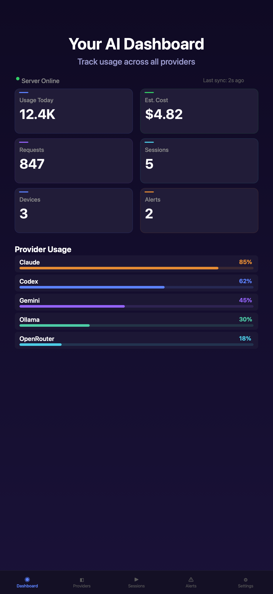
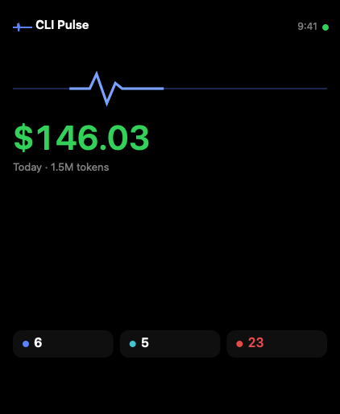

macOS
菜单栏应用，配合本地 helper 扫描会话日志并直接调用 Provider API。
已上线AI 编程用量追踪器
CLI Pulse 汇集你已使用的 AI 提供商和 CLI 工具的用量、额度、重置状态、会话和费用估算——并在 Mac、iPhone、iPad、Apple Watch 和 Android 上展示。你的 Provider API Key 和原始会话日志只留在设备上。


CLI Pulse 原生运行于 Apple 平台，并在 Android 上以内部测试版提供。
菜单栏应用，配合本地 helper 扫描会话日志并直接调用 Provider API。
已上线把同一个仪表盘放进口袋。随时查看额度、会话和提醒。
已上线可扫一眼的复杂功能（complications）和快速查看应用，无需掏出手机。
已上线
加入内部测试计划，提前试用 Android 版本并帮助我们完善。
Beta连接你已安装在机器上的 AI 编程 Agent 和 CLI 工具。CLI Pulse 支持 50+ 家提供商，包括以下这些。
为长期泡在 AI 编程 Agent 里的人准备的聚焦式仪表盘。
在一个地方查看每家提供商的 token 数、请求数、剩余额度和套餐等级，数据来自 Mac 本地 scanner 和 Provider API。
追踪哪些额度已经重置、哪些接近上限，并在提供商快用完时收到提醒——无需逐个打开后台。
根据各提供商公布的定价，在本地估算费用。适合发现异常开销，但不能替代官方账单。
macOS helper 运行且你已登录时，可在 iPhone 或 iPad 上查看 Mac 上的实时 AI-CLI 会话，并响应提示或权限请求。
从 App Store 下载、获取已签名的 macOS DMG，或加入 Android 内部测试计划。也支持用 Homebrew 安装。
你也可以从 GitHub Releases 侧载 Android APK。其他来源的二进制文件均非正版。
关于产品、数据和支持的快速解答。